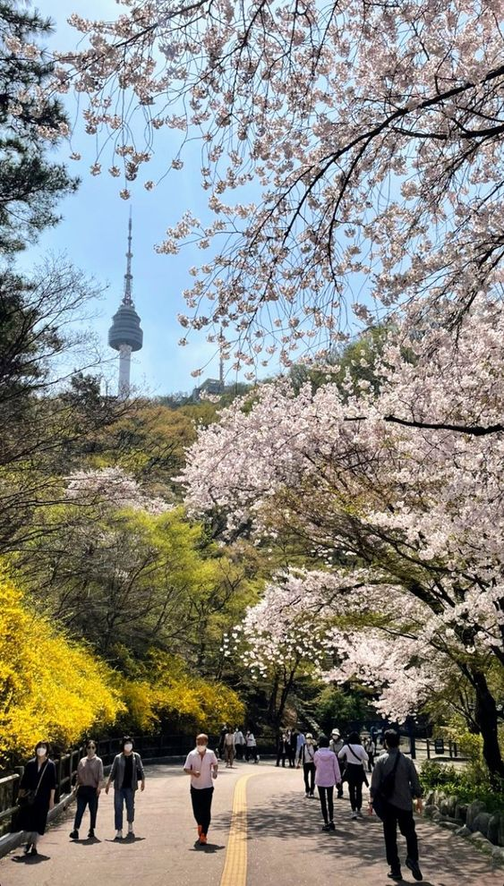
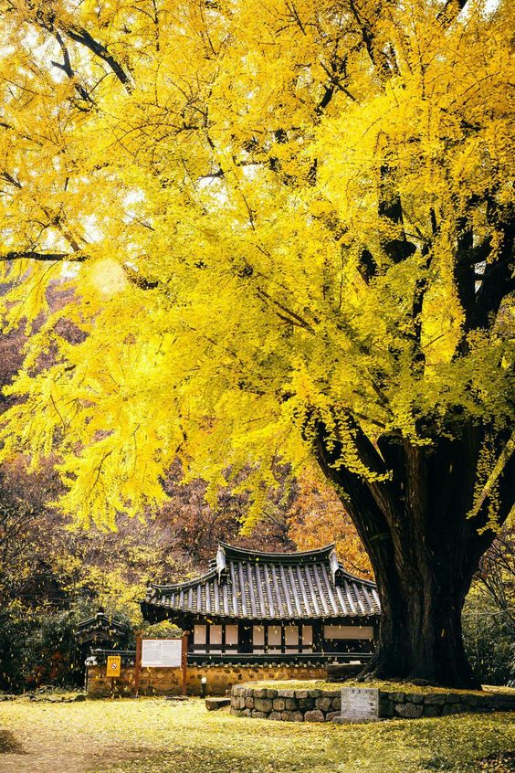
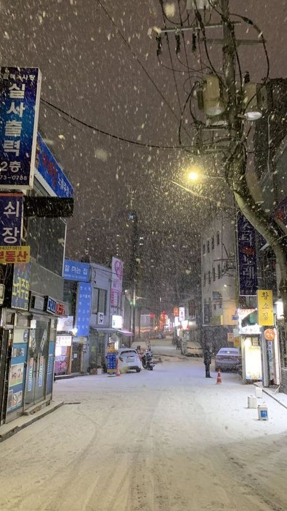

ABOUT US
SPACE
MAP
season 4 you
SEASON 1 SPRING

SPRING
흐드러지는 꽃 향기와 따듯한 햇살,
찬 겨울로부터 봄으로 오는 것을 느껴보세요
SUMMER
뜨거운 햇살, 쏟아지는 빗방울,
하루종일 울어대는 매미와 풀벌레,
여름의 정중앙에서 파도소리에 집중해보세요
SEASON 2 SUMMER
SEASON 3 AUTUMN

AUTUMN
높고 파란 하늘과 그 아래 단풍들,
수확의 결실을 맺는 계절 속에서
낙엽 구르는 소리에 귀를 기울여 보세요
WINTER
매섭게 부는 바람과 새하얀 눈,
가을이 쓸고 지나간 자리 위에서
피어나는 겨울을 느껴보세요

SEASON 4
WINTER